File: 000900.gt.txt (if the image is defective, simply delete all Arabic text and the line will be excluded)
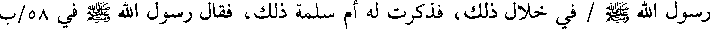
رسول الله صلعم / في خلال ذلك، فذكرت له أم سلمة ذلك، فقال رسول الله صلعم في 58/ب
File: 000901.gt.txt (if the image is defective, simply delete all Arabic text and the line will be excluded)
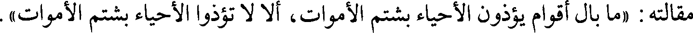
مقالته : «ما بال أقوام يؤذون الأحياء بشتم الأموات، ألا لا تؤذوا الأحياء بشتم الأموات».
File: 000902.gt.txt (if the image is defective, simply delete all Arabic text and the line will be excluded)
أن عكرمة بن أبي جهل كان إذا أجهد اليمين، قال : لا والذي نجاتي يوم بدر،
File: 000903.gt.txt (if the image is defective, simply delete all Arabic text and the line will be excluded)
وكان يضع المصحف على وجهه ويقول : كتاب ربي كتاب ربي.
File: 000904.gt.txt (if the image is defective, simply delete all Arabic text and the line will be excluded)
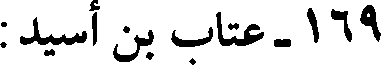
169 - عتاب بن أسيد:
File: 000905.gt.txt (if the image is defective, simply delete all Arabic text and the line will be excluded)
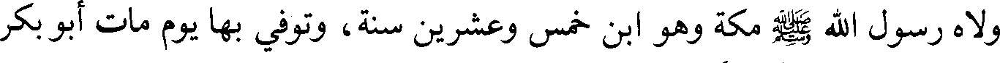
ولاه رسول الله صلعم مكة وهو ابن خمس وعشرين سنة، وتوفي بها يوم مات أبو بكر
File: 000906.gt.txt (if the image is defective, simply delete all Arabic text and the line will be excluded)
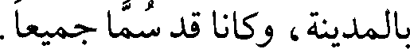
بالمدينة، وكانا قد سما جميعا.
File: 000907.gt.txt (if the image is defective, simply delete all Arabic text and the line will be excluded)
170 - نعيم النحام بن عبد الله بن أسيد بن عبد عوف(3):
File: 000908.gt.txt (if the image is defective, simply delete all Arabic text and the line will be excluded)
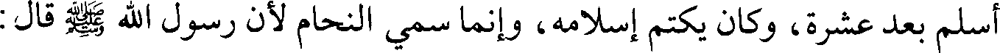
أسلم بعد عشرة، وكان يكتم إسلامه، وإنما سمي النحام لأن رسول الله صلعم قال :
File: 000909.gt.txt (if the image is defective, simply delete all Arabic text and the line will be excluded)
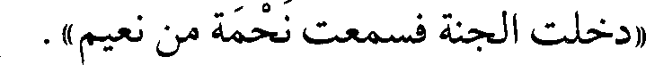
«دخلت الجنة فسمعت نحمة من نعيم» .
File: 000910.gt.txt (if the image is defective, simply delete all Arabic text and the line will be excluded)
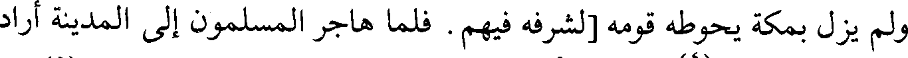
ولم يزل بمكة يحوطه قومه [لشرفه فيهم. فلما هاجر المسلمون إلى المدينة أراد
File: 000911.gt.txt (if the image is defective, simply delete all Arabic text and the line will be excluded)
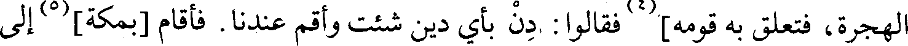
الهجرة، فتعلق به قومه](4) فقالوا : دن بأي دين شئت وأقم عندنا. فأقام [بمكة](5) إلى
File: 000912.gt.txt (if the image is defective, simply delete all Arabic text and the line will be excluded)
File: 000913.gt.txt (if the image is defective, simply delete all Arabic text and the line will be excluded)
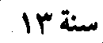
سنة 13
File: 000914.gt.txt (if the image is defective, simply delete all Arabic text and the line will be excluded)
فبينا هو عند عمر بن الخطاب رضي الله عنه إذ أتي بطعام فتنحى عنه، فقال
File: 000915.gt.txt (if the image is defective, simply delete all Arabic text and the line will be excluded)
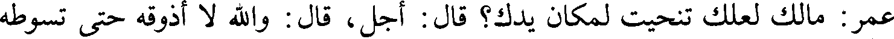
عمر : مالك لعلك تنحيت لمكان يدك؟ قال : أجل، قال : والله لا أذوقه حتى تسوطه
File: 000916.gt.txt (if the image is defective, simply delete all Arabic text and the line will be excluded)
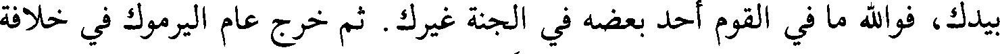
بيدك، فوالله ما في القوم أحد بعضه في الجنة غيرك. ثم خرج عام اليرموك في خلافة
File: 000917.gt.txt (if the image is defective, simply delete all Arabic text and the line will be excluded)
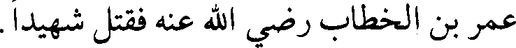
عمر بن الخطاب رضي الله عنه فقتل شهيدا.
File: 000918.gt.txt (if the image is defective, simply delete all Arabic text and the line will be excluded)
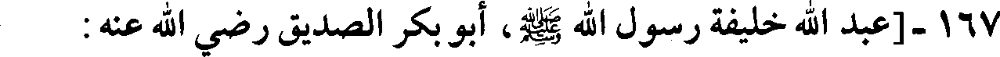
167-[عبد الله خليفة رسول الله صلعم، أبو بكر الصديق رضي الله عنه :
File: 000919.gt.txt (if the image is defective, simply delete all Arabic text and the line will be excluded)
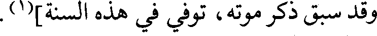
وقد سبق ذكر موته، توفي في هذه السنة](1).
File: 000920.gt.txt (if the image is defective, simply delete all Arabic text and the line will be excluded)
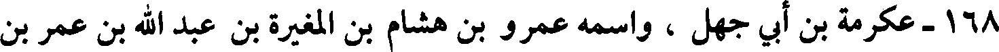
168 - عكرمة بن أبي جهل ، واسمه عمرو بن هشام بن المغيرة بن عبد الله بن عمر بن
File: 000921.gt.txt (if the image is defective, simply delete all Arabic text and the line will be excluded)
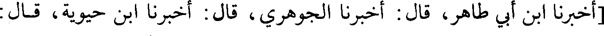
[أخبرنا ابن أبي طاهر، قال : أخبرنا الجوهري، قال : أخبرنا ابن حيوية، قال :
File: 000922.gt.txt (if the image is defective, simply delete all Arabic text and the line will be excluded)
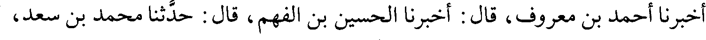
أخبرنا أحمد بن معروف، قال : أخبرنا الحسين بن الفهم، قال : حدثنا محمد بن سعد،
File: 000923.gt.txt (if the image is defective, simply delete all Arabic text and the line will be excluded)
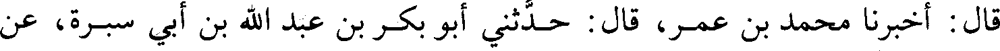
قال : أخبرنا محمد بن عمر، قال : حدثني أبو بكر بن عبد الله بن أبي سبرة، عن
File: 000924.gt.txt (if the image is defective, simply delete all Arabic text and the line will be excluded)
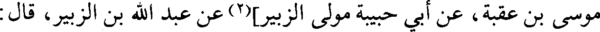
موسى بن عقبة، عن أبي حبيبة مولى الزبير](2) عن عبد الله بن الزبير، قال :
File: 000925.gt.txt (if the image is defective, simply delete all Arabic text and the line will be excluded)
لما كان يوم فتح مكة هرب عكرمة بن أبي جهل إلى اليمن، وخاف أن يقتله رسول
File: 000926.gt.txt (if the image is defective, simply delete all Arabic text and the line will be excluded)
الله صلعم، [فجاءت زوجته إلى رسول الله صلعم](3) / وكانت امرأته أم حليم بنت 57/ب
File: 000927.gt.txt (if the image is defective, simply delete all Arabic text and the line will be excluded)
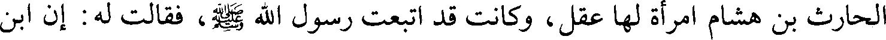
الحارث بن هشام امرأة لها عقل، وكانت قد اتبعت رسول الله صلعم، فقالت له : إن ابن
File: 000928.gt.txt (if the image is defective, simply delete all Arabic text and the line will be excluded)
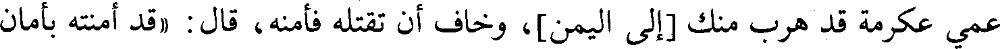
عمي عكرمة قد هرب منك [إلى اليمن]، وخاف أن تقتله فأمنه، قال : «قد أمنته بأمان
File: 000929.gt.txt (if the image is defective, simply delete all Arabic text and the line will be excluded)
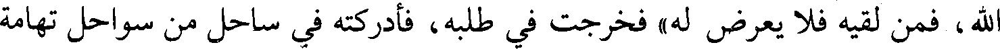
الله، فمن لقيه فلا يعرض له» فخرجت في طلبه، فأدركته في ساحل من سواحل تهامة
To Save: `Ctrl+s`, make sure to choose `Webpage, complete`!